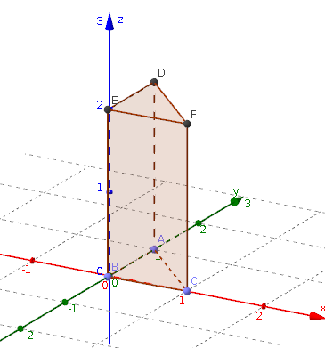

| Choisissez votre langue ! | Choose your language ! |
Nous ne proposons aucun résultat, il s'agit simplement d'accroître la 'bibliothèque' du lecteur en matière de figures de l'espace qui se résume pour l'instant :
- Aux (points, droites, plans)
- Aux sous-ensembles de telles variétés ( , , , etc...)
- Aux
- A quelques polyèdres ( , parallélépipèdes)
En outre, nous utiliserons abondamment ces figures dans le prochain chapitre consacré aux coniques.
Courbes planes
Nous supposons pour le moment acquis le concept de 'courbe plane' .Une telle courbe pouvant être définie comme :
- L'ensemble des points M(t)(x(t),y(t)) où le plus souvent x(t) et y(t) sont deux fonctions de la variable t laquelle parcourt un intervalle I (courbe paramétrée)
- Une équation du type y=f(x), la courbe se confondant alors avec le de la fonction f
- Une équation cartésienne (par exemple x²+y²=r²) pour un cercle
Quand au cas 3) il peut se ramener, dans la plupart des cas simples, au cas 2) donc au cas 1) par le .
Cylindres
We do not offer any results, it is simply a question of increasing the reader's 'library' in terms of figures of space which can be summed up for the moment:
- To the (points, lines, planes )
- To subsets of such varieties ( , , , etc...)
- To
- A few polyhedra ( , parallelepipeds)
Moreover, we will use these figures extensively in the next chapter devoted to conic sections.
Planar curves
We assume for the moment that the concept of 'flat curve' has been acquired.Such a curve can be defined as:
- The set of points M(t)(x(t),y(t)) where most often x(t) and y(t) are two functions of the variable t which covers an interval I (parametric curve)
- An equation of the type y=f(x), the curve then merging with the of function f
- A Cartesian equation (e.g. x²+y²=r²) for a circle
When in case 3) it can be reduced, in most simple cases, to case 2) therefore to case 1) by the .
Cylinders
On suppose également qu'on s'est donné une 'direction' matérialisée par un axe, c'est à dire une droite Δ et un vecteur directeur \( \displaystyle \overrightarrow{w} \) de cette droite.
Pour chaque valeur de t, on considère la droite D(t) passant par M(t) et de vecteur directeur \( \displaystyle \overrightarrow{w} \) . On appelle 'cylindre' de base B et de direction Δ l'ensemble engendré par les droites D(t), c'est à dire leur réunion.
We also assume that we are given a 'direction' materialized by an axis, i.e. a straight line Δ and a direction vector \( \displaystyle \overrightarrow{w} \) of this line.
For each value of t, we consider the line D(t) passing through M(t) and with direction vector \( \displaystyle \overrightarrow{w} \) . We call 'cylinder' with base B and direction Δ the set generated by the lines D(t), i.e. their union.
Dans le cas contraire il est dit 'oblique' .
Otherwise it is said to be 'oblique' .
L'application (t,s) → M(t,s) définit donc une application surjective de I×ℝ sur le cylindre.
Nous verrons plus tard qu'une grand nombre de propriétés de la surface peuvent être déduites de l'étude analytique de cette fonction mais ceci suppose connues des notions d'analyse sur les fonctions de plusieurs variables (continuité, différentiabilité, etc.).
Cylindre à base circulaire
Quand la base est un cercle, on retrouve la notion usuelle de 'cylindre'.Voici une animation qui vous permet de voir la génération d'un cylindre droit à base circulaire.
The application (t,s) → M(t,s) therefore defines a surjective map of I×ℝ onto the cylinder.
We will see later that a large number of properties of the surface can be deduced from the analytical study of this function but this supposes known notions of analysis on the functions of several variables (continuity, differentiability, etc.).
Cylinder with circular base
When the base is a circle, we find the usual common notion of 'cylinder'.Here is an animation that allows you to see the generation of a straight cylinder with a circular base.
Prismes
On peut également prendre pour base un polygone convexe, comme un triangle ou un quadrilatère.Prisms
It is also possible to take as a base a convex polygon, such as a triangle or a quadrilateral.Cylindres tronqués
Truncated cylinders

Cônes
Cones
On suppose également qu'on s'est donné un point A n'appartenant pas au plan P et appelé 'sommet' .
Pour chaque valeur de t, on considère la droite D(t) passant par M(t) et A. On appelle 'cône' de base B et de sommet A l'ensemble engendré par les droites D(t), c'est à dire leur réunion.
We also suppose that we have given ourselves a point A not belonging to the plane P and called 'vertex' .
For each value of t, we consider the line D(t) passing through M(t) and A. We call 'cone' with base B and vertex A the set generated by the lines D(t), i.e. their union.
L'application (t,s) → M(t,s) définit donc une application surjective de I×ℝ sur le cône.
La même remarque ci-dessus faite pour les cylindres s'applique également aux cônes.
Cônes circulaire
Ce sont les cônes dont la base est un cercle.Voici une animation permettant de voir la génération d'un cône circulaire.
The application (t,s) → M(t,s) therefore defines a surjective map of I×ℝ onyo the cone.
The same point above made for cylinders also applies to cones as well.
Circular cones
These are the cones whose base is a circle.Here is an animation showing the generation of a circular cone.
Cônes à base polygonale
Voici une animation permettant de voir la génération d'un cône à base carrée.Polygonal based cones
Here is an animation showing the generation of a square-based cone.Troncs de cônes
Truncated cones
Equations cartésiennes
Les points d'une surface réglée sont donc caractérisés par 3 équations à 2 inconnues :\( \displaystyle \left\{ \begin{matrix} {x = x(t,s)} \\ {y = y(t,s)} \\ {z = z(t,s)} \\ \end{matrix} \right. \)
constituant une représentation paramétrique de la surface.Il est parfois possible d'extraire de cette représentation une équation unique du type f(x,y,z)=0 caractérisant les points de la surface, une telle équation (comme dans le cas d'un hyperplan) est dite équation 'cartésienne' de la surface réglée.
Traitons un exemple ; prenons un cône à base circulaire.
Le point M(t) décrit la base circulaire d'équation x²+y²=1 dans le plan z=0 paramétrée par : t → M(t)(cos(t),sin(t),0).
Le sommet S est S(0,0,1), de sorte qu'un vecteur directeur de la droite (MS) est :
\( \displaystyle w(t) = \begin{pmatrix} {\cos(t)} \\ {\sin(t)} \\ {- 1} \\ \end{pmatrix} \)
Une représentation paramétrique du cône est donc :\( \displaystyle \left\{ \begin{matrix} {x\left( {t,s} \right) = s . \cos(t)} \\ {y\left( {s,t} \right) = s . \sin(t)} \\ {z\left( {s,t} \right) = 1 - s} \\ \end{matrix} \right. \)
De là nous tirons x2+y2=s2 et s=1-z, d'où finalement l'équation cartésienne de ce cône :\( \displaystyle x^{2} + y^{2} = \left( {1 - z} \right)^{2} \)
Surfaces réglées plus générales
On peut s'affranchir de la condition suivant laquelle les droites Dt doivent soit être toutes parallèles à une direction de droite donnée (cas des cylindres), soit toutes passer par un même point (cas des cônes).De façon plus générale :
Cartesian equations
The points of a ruled surface are therefore characterized by 3 equations with 2 unknowns:\( \displaystyle \left\{ \begin{matrix} {x = x(t,s)} \\ {y = y(t,s)} \\ {z = z(t,s)} \\ \end{matrix} \right. \)
constituting a parametric representation of the surface.It is sometimes possible to extract from this representation a single equation of the type f(x,y,z)=0 characterizing the points of the surface, such an equation (as in the case of a hyperplane) is called a Cartesian equation ' of the ruled surface.
Let's deal with an example; let's take a cone with a circular base.
The point M(t) describes the circular base with equation x²+y²=1 in the plane z=0 parameterized by: t → M(t)(cos(t),sin(t),0).
Vertex S is S(0,0,1), so a direction vector of the line (MS) is:
\( \displaystyle w(t) = \begin{pmatrix} {\cos(t)} \\ {\sin(t)} \\ {- 1} \\ \end{pmatrix} \)
A parametric representation of the cone is therefore:\( \displaystyle \left\{ \begin{matrix} {x\left( {t,s} \right) = s . \cos(t)} \\ {y\left( {s,t} \right) = s . \sin(t)} \\ {z\left( {s,t} \right) = 1 - s} \\ \end{matrix} \right. \)
From this we derive x2+y2=s2 and s=1-z, hence finally the Cartesian equation of this cone:\( \displaystyle x^{2} + y^{2} = \left( {1 - z} \right)^{2} \)
More general ruled surfaces
We can avoid the condition according to which the lines Dt must either all be parallel to a given direction of the line (case of cylinders), or all pass through the same point (case of cones) .More generally:
Les droites Dt s'appellent alors les 'génératrices' de la surface réglée S.
The straight lines Dt are then called the 'generators' of the ruled surface S.
Une surface réglée apparait donc naturellement comme un sous-ensemble doublement paramétré de l'espace.
Le point M(t,s) est le point de la droite Dt de paramètre s dans une représentation paramétrique de Dt, liée le plus généralement au point M(t) de la base et un vecteur unitaire \( \displaystyle \overrightarrow{u(t)} \) .
Le point M(t,s) est donc caractérisé par \( \displaystyle M(t,s)=M(t)+s.\overrightarrow{u(t)} \) .
Quelques exemples
Bande (ou ruban) de Möbius Voici une animation vous permettant de voir la génération de cette surface.
A ruled surface therefore appears naturally as a doubly parameterized subset of the space.
The point M(t,s) is the point on the line Dt with parameter s in a parametric representation of Dt, most generally related to the point M(t ) of the base and a unit vector \( \displaystyle \overrightarrow{u(t)} \) .
The point M(t,s) is therefore characterized by \( \displaystyle M(t,s)=M(t)+s.\overrightarrow{u(t)} \) .
Some examples
Möbius strip (or band) Here is an animation allowing you to see the generation of this surface.
En même temps que M se déplace la droite tourne dans le plan déterminé par l'axe Oz et le point M.
Quand le point M a fait un tour complet la droite à fait un demi tour.
Elle revient au point initial après avoir inversé son orientation.
Pour le traitement d'un cas simple voir .
Conoïde
Voici une animation vous permettant de voir la génération de cette surface.As M moves, the line rotates in the plane determined by the Oz axis and the point M.
When point M has made a complete turn, the line has made a half turn.
It returns to the initial point after reversing its orientation.
For the treatment of a simple case see .
Conoid
Here is an animation allowing you to see the generation of this surface.La droite D(t) passe par le point M(t) elle s'appuie sur une droite D' parallèle au plan du cercle et en étant orthogonale à D'.
Pour le traitement d'un cas simple voir .
Hélicoïde
Voici une animation vous permettant de voir la génération de cette surface.The straight line D(t) passes through the point M(t) it rests on a straight line D' parallel to the plane of the circle and being orthogonal to D'.
For the treatment of a simple case see .
Helicoid
Here is an animation allowing you to see the generation of this surface.En même temps qu'il tourne le point M s'élève proportionellement à l'angle de la rotation.
La droite Dt est orthogonale à l'axe Oz, et elle coupe cet axe.
Pour le traitement d'un cas simple voir .
As it rotates the point M rises proportionally to the angle of rotation.
The line Dt is orthogonal to the Oz axis, and it intersects this axis.
For the treatment of a simple case see .
|
Création Gilles Dubois
Created by Gilles Dubois
|
Janvier 2022
January 2022
|
Version mobile Jquery
Mobile Jquery version
|
|